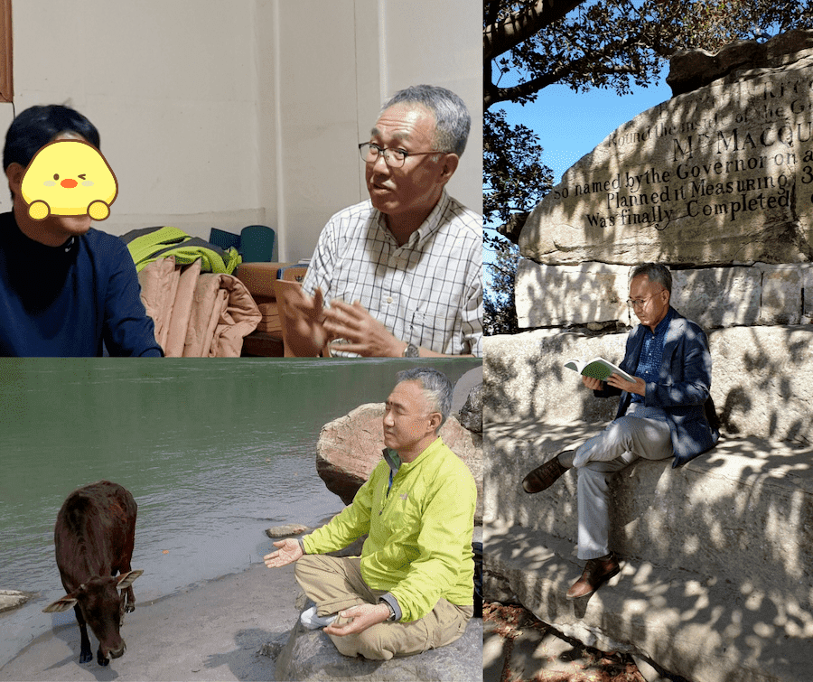
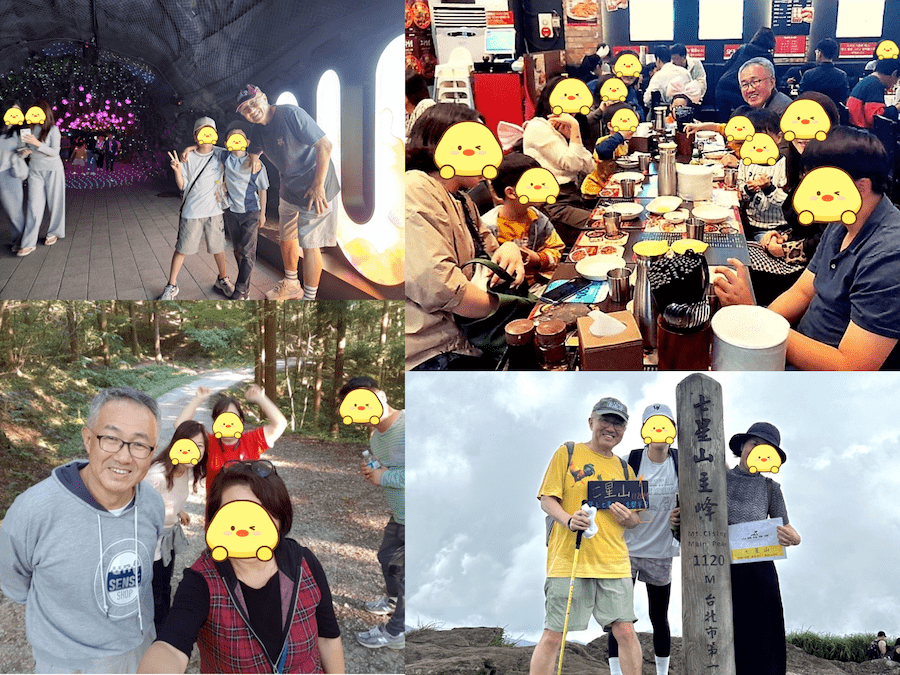
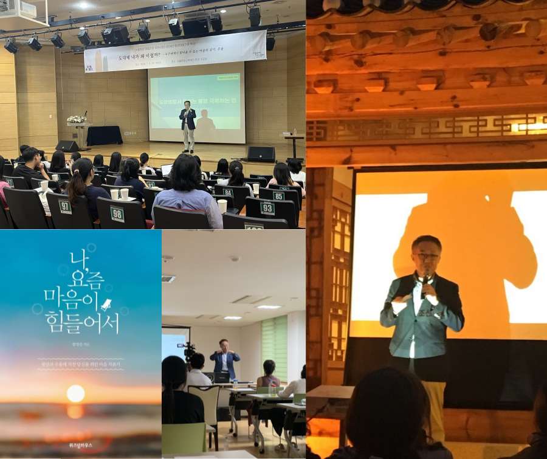

안녕하세요~ 저는 22년간 신문사 기자로 근무 후
공직 생활을 마치며 남부럽지 않은 길을 걸었음에도
50대 중반 갑자기 찾아온 우울증으로
10년간 고생을 했습니다.
'벗어날 수 없는 무기력과
한없이 반복되는 부정적인 생각.
자존감은 사라지고
절망감이 지배하면서
문 밖으로 나가기가 두렵고
예전처럼 돌아갈 수 없을 것 같은
좌절과 막막함...’

스스로도 어찌 못하겠고
거대한 늪에 빠진듯
하루하루가 악전고투 속에서
결국 불면증, 불안장애, 공황발작까지
찾아오게 되었습니다.
우울증 약을 처방 받고 괜찮아지는 듯 했으나
마치 ‘외상후 스트레스 장애(PTSD)’ 환자처럼
부정적 생각들은 계속 주위를 돌며 저를 시험했고
주위 사람들도 예전과 다른
저를 느꼈는지 많이 떠나갔습니다.
약만으로는 절대 해결될 수 없음을 느끼고
저는 기자 정신을 살려
유명하다는 병원 의사부터 시작해
뇌과학자, 심리학자, 철학자, 종교인,
상담가, 명상가, 명리학자, 재활치료 전문가,
그리고 환자 등 수많은 사람들을 만나
우울증의 근원과 치유법을 ‘취재’했습니다.
그리고 이를 통해 얻은 명상, 운동, 심리요법 등
다양한 방법들을 실제 제게 적용시켜 보며
저만의 극복 방법을 찾아나갔습니다.

그 결과, 드디어 약의 의존 없이도,
지금 이 순간 부정적인 생각에 끌려다니지 않고도,
평온한 마음에 자존감을 회복하며
편하게 사람들을 만나고
삶의 행복을 느끼는 등
그토록 바라던 소중한 일상을 되찾게 됐습니다.

또한 60대 후반 나이에도 미래의 희망을 가지고
제가 좋아하고 잘하는 일에
몰두할 수 있는
‘제 3의 인생’이 펼쳐지고 있습니다.

10년간 마음의 병을 겪고
절실하게 극복하는 과정에서
감사하게도 나에게 맞는 방법을 찾고
'우울증을 확실히 치유할 수 있구나!' 라는 걸 느꼈지만
한편으로 재발하기도 쉽고
우울증에 대해 무지한 우리나라 여건상
'자신에게 맞는 우울증 극복 방법을 찾기가 정말
어렵겠구나' 라는 걸 크게 느꼈습니다.
'어떻게 우울의 늪에서 벗어날 수 있을까?'
'도대체 어떻게 부정적인 생각을 끊을 수 있을까?'
'재발을 막으려면 어떻게 해야하는 걸까?'
여러분의 우울증 고민!
정보는 많지만 실제 적용할 수 있는
답을 찾기 너무 어렵지 않나요?
'도대체 어디서 답을 찾아야 하나...'
'어디서부터 어떻게 해야되는 거지?'
막막하기만 하고
막상 이것저것 해봐도
지금 삶에 전혀 적용이 안되고
와닿지 않는 이야기만 가득한 현실
저는 이것이 우울증을 극복하기 힘든
가장 큰 이유 중 하나라고 생각합니다.
그래서 시도해보고자 합니다.
가족도 공감하기 힘든
막막한 우울증 고민이 있을 때
나의 고민에 맞게
삶에 적용할 수 있는 극복 방법을
찾을 수 있는 기회를 만드는 것
이것을 목표로
각자 우울증을 극복할 수 있는
‘맞춤형’ 실전(實戰) 방법을 찾아보는
컨퍼런스와 교육 프로그램을 기획하고 있습니다.

단순한 정보 전달이 아니라
여러분의 고민과 소망에 맞춰
검증된 맞춤 전문가를 찾아
가장 답답해하는 문제를 해결해보는 시간!
그리고 비슷한 공감대에 있는 사람들과
함께 모여 같이 답을 찾아나가는
기회를 만드려면 여러분의 참여가 필요합니다.
[여러분의 고민과 소망을 간편하게 적어주세요.]
설문을 해주신 선착순 100분에게
기획을 통해 만들어질 프로그램에
특별 참여 혜택을 제공해드립니다!